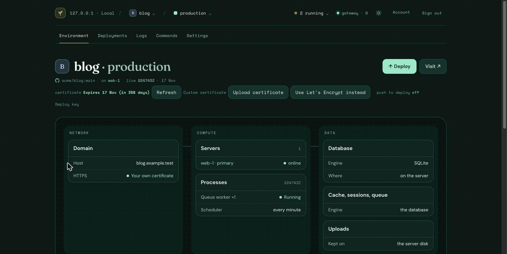
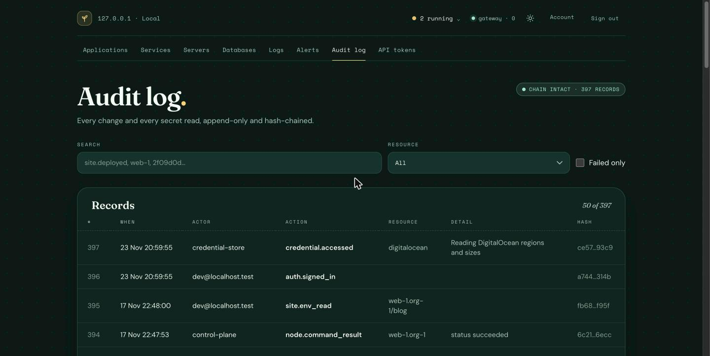
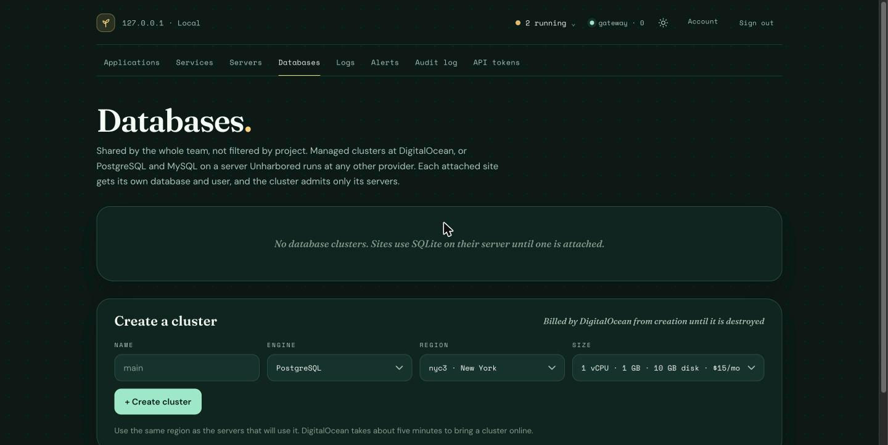

Deploy to servers you own.
Unharbored is a control plane for deploying and running applications on servers in your own cloud account. It provisions, configures, deploys, scales and monitors them. The servers, and the bill, stay yours.
There is no hosted service or sign-up yet. For now you run it yourself, and the repository has the instructions.
Managed convenience, without giving up the servers
Tools tend to make you choose. Server managers give you root on your own machines but little automation beyond that. Platform-as-a-service tools give you a smooth experience but take the servers away. Unharbored is aiming for both.
Your account, your servers
Droplets and databases are created in your own cloud account. Unharbored never resells capacity, so you can walk away and everything keeps running.
No SSH keys to steal
Each server runs a small agent that opens an outbound, mutually authenticated connection. We hold no private key that grants root, and nothing listens on the server for the control plane.
Every change on the record
An append-only, hash-chained audit log records changes and every secret read, with a check that the chain is intact.
What it does today
The first phase is working end to end. It is early software: expect rough edges.
Deploy from GitHub
Push to deploy, atomic releases, rollback, HTTPS, queue workers, the scheduler, daemons and Reverb for Laravel applications.
Provision or bring your own
Create servers at a cloud provider, or adopt a machine you already have over root SSH. One provider per server, no mixing.
Databases
Managed clusters at DigitalOcean, or PostgreSQL and MySQL on a server Unharbored runs for you at any other provider, with TLS and firewall allow-lists.
Services from templates
Install self-hosted software such as object storage onto a server, or onto a new server made just for it, with a free generated address if you do not have a domain handy.
Teams and roles
Teams, owners and members, invitations, and projects to group applications.
Self-hostable
The management server rebuilds from the repository with one script, and restores from a snapshot and its key.
Where it sits
A rough sketch, not a feature-by-feature verdict. The repository has a fuller comparison.
| Server managers | Platform tools | Unharbored | |
|---|---|---|---|
| Servers in your account | Yes | No | Yes |
| Managed experience | Partly | Yes | The goal |
| Stores root SSH keys | Usually | n/a | No: outbound agent |
A look at the console



Open source, and run it yourself
The code is public under the Functional Source License, which turns into Apache 2.0 after two years. Read it, run it, and tell us what breaks.
git clone https://github.com/unharbored/unharbored.git